Creating simulations with SpiMoSim is easy. Try it out! SpiMoSim works as follows:
The blue boxes depend on your model and have to be defined below. Download your simulation. Unzip the file and upload it to a webserver. The simulation is in the folder model.
Hint: If you have python3 installed you can start a webserver with the following command:
python3 -m http.server 8080